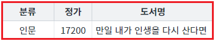

[DataList] 컬럼 데이터에 두 번째 필터 적용 시 합집합 또는 교집합 적용하기
1개요
DataList의 컬럼 데이터에 필터를 적용하는 예제입니다. 이 예제는 함수 'setColumnFilter'의 첫 번째 인자의 속성 'condition' 설정 값에 따른 결과 값을 확인할 수 있습니다.
속성 'condition' 설정 값에 따른 동작 방식은 다음과 같습니다. - "and" : 교집합으로, 이미 적용된 필터 데이터와 병합하는 조건입니다. - "or" : 합집합으로, 이미 적용된 필터 데이터와 병합하는 조건입니다.
2구현된 기능
두 번째 필터 적용 시 'AND'(교집합) 조건으로 호출
두 번째 필터 적용 시 'OR'(합집합) 조건으로 호출
3예제 테스트 방법
3.1공통 버튼 설명
버튼 DataList의 데이터 초기화
기능 : DataList에 적용된 필터를 모두 해제하고 초기 데이터를 설정합니다.
3.2두 번째 필터 적용 시 'AND'(교집합) 조건으로 호출
STEP 1. 초기 상태 확인하기
필터를 적용할 DataList와 GridView와 연결되어 있습니다.
GridView를 통해 필터가 적용된 데이터를 확인할 수 있습니다.
초기 상태는 필터가 적용되지 않은 상태입니다.
GridView는 영역 '결과 확인용 GridView' 아래에 구성되어 있습니다.그림 1.브라우저(Chrome) 실행 예시
STEP 2. 컬럼 '도서명'에 첫 번째 필터를 적용합니다.
버튼 1.1 AND 조건 - 컬럼 '도서명'의 값에 '인생'이 포함된 경우를 클릭합니다.STEP 3. 실행된 결과를 확인합니다.
컬럼 '도서명'의 데이터에 '인생'이 포함된 데이터가 출력됩니다.
그림 2.브라우저(Chrome) 실행 예시
영역 [로그 확인]에 출력된 로그를 확인합니다.
(브라우저의 개발자 도구 콘솔에도 로그가 출력되며, 객체 형식으로 확인할 수 있습니다.)
필터 조건이 담긴 JSON을 확인할 수 있습니다.로그
[17:13:10] # 1.1 AND 조건 - 컬럼 '도서명'의 값에 '인생'이 포함된 경우 | 필터 조건
[17:13:10] {
"type": "row",
"colIndex": "label",
"key": "인생",
"exactMatch": false,
"condition": "and"
}STEP 3. 컬럼 '분류'에 두 번째 필터를 "AND" 조건으로 적용합니다.
버튼 1.2 AND 조건 - 컬럼 '분류'의 값에 '인문'과 일치하는 경우를 클릭합니다.STEP 4. 실행된 결과를 확인합니다.
이미 적용된 필터 데이터에서 컬럼 '분류'의 데이터가 '인문'과 일치하는 데이터가 출력됩니다.
그림 3.브라우저(Chrome) 실행 예시

영역 [로그 확인]에 출력된 로그를 확인합니다.
(브라우저의 개발자 도구 콘솔에도 로그가 출력되며, 객체 형식으로 확인할 수 있습니다.)
필터 조건이 담긴 JSON을 확인할 수 있습니다.로그
[17:13:34] # 1.2 AND 조건 - 컬럼 '분류'의 값에 '인문'과 일치하는 경우 | 필터 조건
[17:13:34] {
"type": "row",
"colIndex": "categoryLabel",
"key": "인문",
"exactMatch": true,
"condition": "and"
}3.3두 번째 필터 적용 시 'OR'(합집합) 조건으로 호출
STEP 1. 초기 상태 확인하기
필터를 적용할 DataList와 GridView와 연결되어 있습니다.
GridView를 통해 필터가 적용된 데이터를 확인할 수 있습니다.
초기 상태는 필터가 적용되지 않은 상태입니다.
GridView는 영역 '결과 확인용 GridView' 아래에 구성되어 있습니다.그림 4.브라우저(Chrome) 실행 예시
STEP 2. 컬럼 '도서명'에 첫 번째 필터를 적용합니다.
버튼 2.1 AND 조건 - 컬럼 '도서명'의 값에 '인생'이 포함된 경우를 클릭합니다.STEP 3. 실행된 결과를 확인합니다.
컬럼 '도서명'의 데이터에 '인생'이 포함된 데이터가 출력됩니다.
그림 5.브라우저(Chrome) 실행 예시
영역 [로그 확인]에 출력된 로그를 확인합니다.
(브라우저의 개발자 도구 콘솔에도 로그가 출력되며, 객체 형식으로 확인할 수 있습니다.)
필터 조건이 담긴 JSON을 확인할 수 있습니다.로그
[17:14:21] # 2.1 AND 조건 - 컬럼 '도서명'의 값에 '인생'이 포함된 경우 | 필터 조건
[17:14:21] {
"type": "row",
"colIndex": "label",
"key": "인생",
"exactMatch": false,
"condition": "and"
}STEP 3. 컬럼 '분류'에 두 번째 필터를 "OR" 조건으로 적용합니다.
버튼 2.2 OR 조건 - 컬럼 '분류'의 값에 '인문'과 일치하는 경우를 클릭합니다.STEP 4. 실행된 결과를 확인합니다.
이미 적용된 필터 데이터와 원본 데이터를 대상으로 컬럼 '분류'의 데이터가 '인문'과 일치하는 데이터가 출력됩니다.
그림 6.브라우저(Chrome) 실행 예시
영역 [로그 확인]에 출력된 로그를 확인합니다.
(브라우저의 개발자 도구 콘솔에도 로그가 출력되며, 객체 형식으로 확인할 수 있습니다.)
필터 조건이 담긴 JSON을 확인할 수 있습니다.로그
[17:14:35] # 2.2 OR 조건 - 컬럼 '분류'의 값에 '인문'과 일치하는 경우 | 필터 조건
[17:14:35] {
"type": "row",
"colIndex": "categoryLabel",
"key": "인문",
"exactMatch": true,
"condition": "or"
}4구현 예시
4.1두 번째 필터 적용 시 'AND'(교집합) 조건으로 호출
원하는 시점에 DataList의 함수 'setColumnFilter'를 이용하여 스크립트를 작성합니다. 함수 'setColumnFilter'의 첫 번째 인자의 속성 'condition'의 설정 값을 'and'로 지정합니다. 세부 지정은 아래의 스크립트 예시에 작성되어 있습니다.
스크립트
//예제 파일에서는 스크립트 scwin.btn_exam1_2_onclick에 작성되어 있습니다. // 필터 조건이 담긴 JSON let jsnFilterOptions = {}; // 기 적용된 필터 데이터와의 병합 조건. 적용된 필터 데이터를 대상으로 검색합니다. jsnFilterOptions.condition = "and"; // 검색 방식. 검색 대상 데이터를 문자열로 변경한 뒤 비교 연산 "===" 또는 함수 "indexOf"로 검색. jsnFilterOptions.type = "row"; // DataList의 컬럼 ID 또는 컬럼 Index. 검색 대상. jsnFilterOptions.colIndex = "categoryLabel"; // 검색 문자열. jsnFilterOptions.key = "인문"; // 검색 대상 데이터와 검색 문자열과의 완전 일치 여부. 비교 연산 "==="로 검색. jsnFilterOptions.exactMatch = true; // DataList 'dlt_books_1'에 필터를 적용합니다. dlt_books_1.setColumnFilter(jsnFilterOptions);
4.2두 번째 필터 적용 시 'OR'(합집합) 조건으로 호출
원하는 시점에 DataList의 함수 'setColumnFilter'를 이용하여 스크립트를 작성합니다. 함수 'setColumnFilter'의 첫 번째 인자의 속성 'condition'의 설정 값을 'or'로 지정합니다. 세부 지정은 아래의 스크립트 예시에 작성되어 있습니다.
스크립트
//예제 파일에서는 스크립트 scwin.btn_exam2_2_onclick에 작성되어 있습니다. // 필터 조건이 담긴 JSON let jsnFilterOptions = {}; // 기 적용된 필터 데이터와의 병합 조건으로 합집합 적용. 이미 적용된 필터 데이터와 원본 데이터를 대상으로 검색한 데이터가 포함됩니다. jsnFilterOptions.condition = "or"; // 검색 방식. 검색 대상 데이터를 문자열로 변경한 뒤 비교 연산 "===" 또는 함수 "indexOf"로 검색. jsnFilterOptions.type = "row"; // DataList의 컬럼 ID 또는 컬럼 Index. 검색 대상. jsnFilterOptions.colIndex = "categoryLabel"; // 검색 문자열. jsnFilterOptions.key = "인문"; // 검색 대상 데이터와 검색 문자열과의 완전 일치 여부. 비교 연산 "==="로 검색. jsnFilterOptions.exactMatch = true; // DataList 'dlt_books_1'에 필터를 적용합니다. dlt_books_1.setColumnFilter(jsnFilterOptions);
5주요 API
setColumnFilter( filterOptions )
filterOptions.condition
filterOptions.colIndex
filterOptions.type
filterOptions.key
filterOptions.exactMatch
filterOptions.param
clearFilter( )
6참고 문서
[웹스퀘어5 예제 가이드] [DataList] 컬럼 데이터에 필터 적용하기 - 데이터 문자열 검색
[웹스퀘어5 예제 가이드] [DataList] 컬럼 데이터에 필터 적용하기 - 정규 표현식 검색
[웹스퀘어5 예제 가이드] [DataList] 컬럼 데이터에 필터 적용하기 - 함수 사용 검색
7참고 동영상
DataList - setColumnFilter
링크 : https://youtu.be/n8MHpWaVKaU